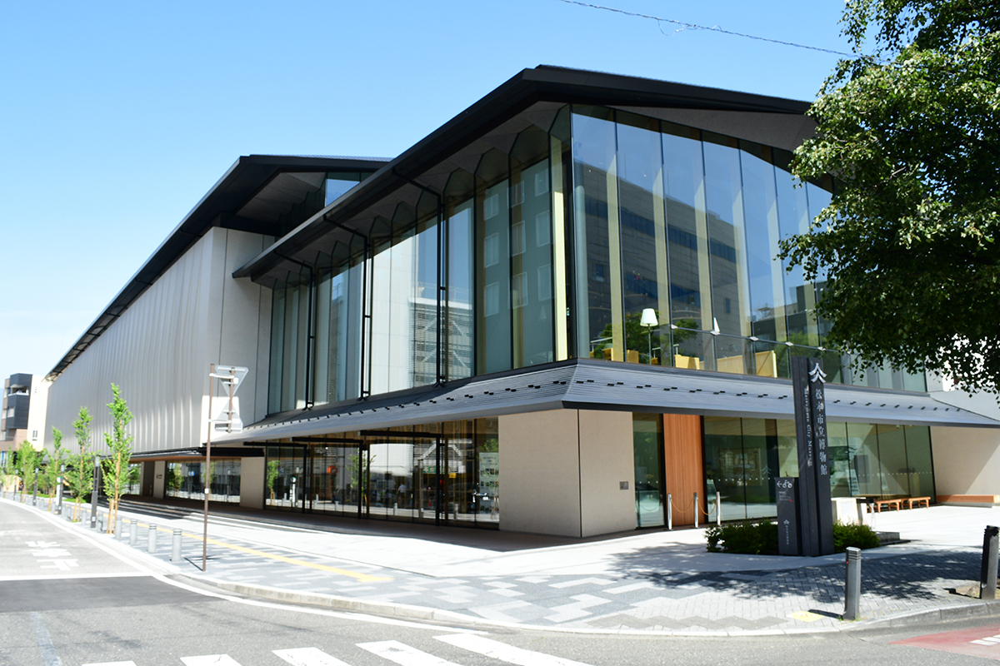
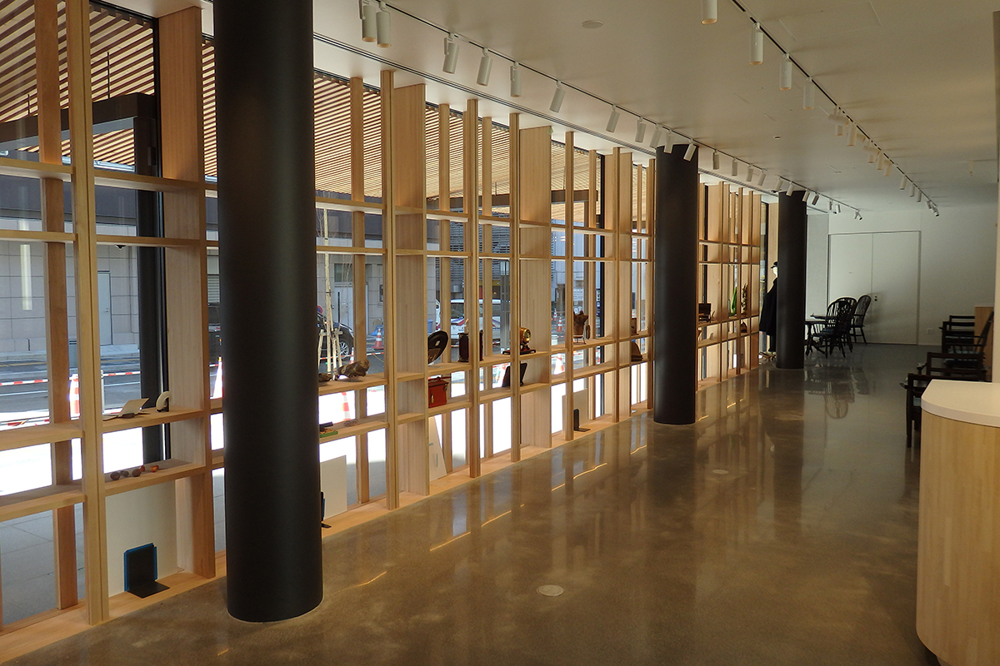
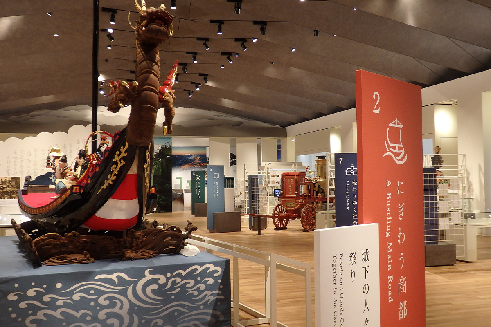
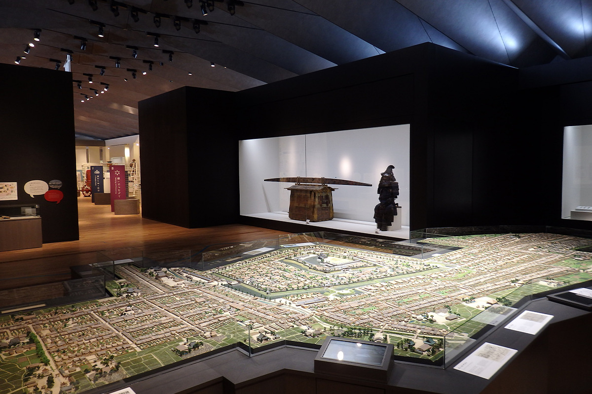

Префектура Нагано · Мацумото · музей
Городской музей Мацумото: новый дом у замка, где начинается знакомство с городом

Городскому музею Мацумото больше ста лет, а 7 октября 2023 года он открылся заново, в новом здании рядом с замком. О городе здесь рассказывают не только экспонаты, но и сам дом.
Музей
Белые стены и витрины на улицу
Городской музей Мацумото ведёт историю с 1906 года. Новое здание построили в Сан-но-мару, внешнем кольце замка Мацумото, где в эпоху Эдо стояли усадьбы старших самураев княжества. Проект опирается на местные традиции, поэтому о культуре города здесь рассказывают не только редкие экспонаты из фондов, но и сама архитектура.
Музей стал главной площадкой проекта «Весь Мацумото как музей». Идея проекта в том, чтобы считать весь город музеем под открытым небом: природа, культура, промыслы и повседневная жизнь становятся экспонатами, по которым можно изучать историю и культуру этих мест.

Белые наружные стены напоминают белую штукатурку старых складов-кура, а рельефный узор на них отсылает к «Мацумото тэмари», мячикам-оберегам, которые в здешних домах держат как талисман на счастье. Двускатная крыша тоже повторяет силуэт склада. С южной стороны первый этаж переходит в навес, который сливается с улицей, а вдоль окон тянутся полки «оконной галереи», где можно выставлять самые разные вещи. Музей задуман так, чтобы и горожане, и путешественники заходили сюда запросто, по пути.
Экспозиция
Восемь тем о Мацумото
Постоянная экспозиция построена вокруг людей и того, как менялся город. Она разделена на восемь тем, и каждая помогает сразу ухватить характер Мацумото. Здесь рассказывают о замке Мацумото, символе города и предмете гордости его жителей, о традиционных праздниках, которые помнят времена шумного торгового города, об умении жить рядом с природой и о том, как горожане сами меняли свой город.

Не пропустите макет призамкового города эпохи Эдо, собранный по старинным планам и материалам, которые передали музею жители. К открытию нового здания отреставрировали и другие экспонаты, среди них праздничный «корабль сокровищ» и паровой насос.

Лучше всего начать знакомство с Мацумото именно отсюда: сначала музей, потом неспешная прогулка по городу, и его традиции и культура откроются гораздо полнее.
Городской музей Мацумото
- Адрес
- префектура Нагано, Мацумото, Отэ, 3-2-21
- Телефон
- +81 263-32-0133
- Часы работы
- 1-й этаж 9:00–21:00; 2-й и 3-й этажи и детская игровая зона 9:00–17:00
- Выходные
- 1-й этаж в третий вторник месяца; 2-й и 3-й этажи и детская зона по вторникам; новогодние праздники (если выходной выпадает на праздник, музей закрыт на следующий день, бывают и другие закрытия)